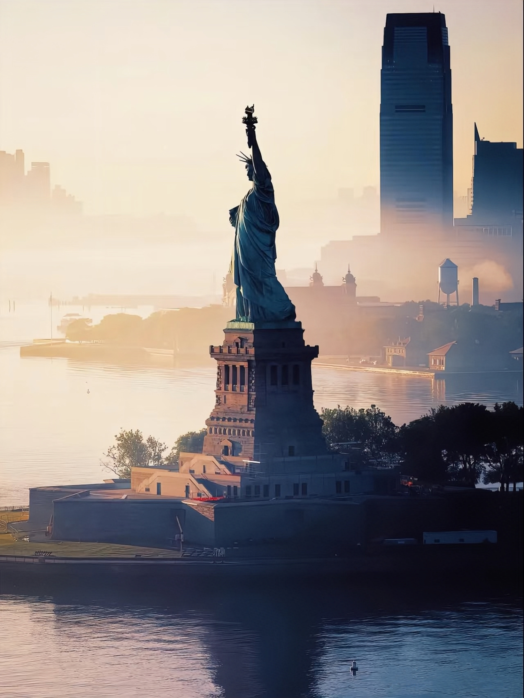
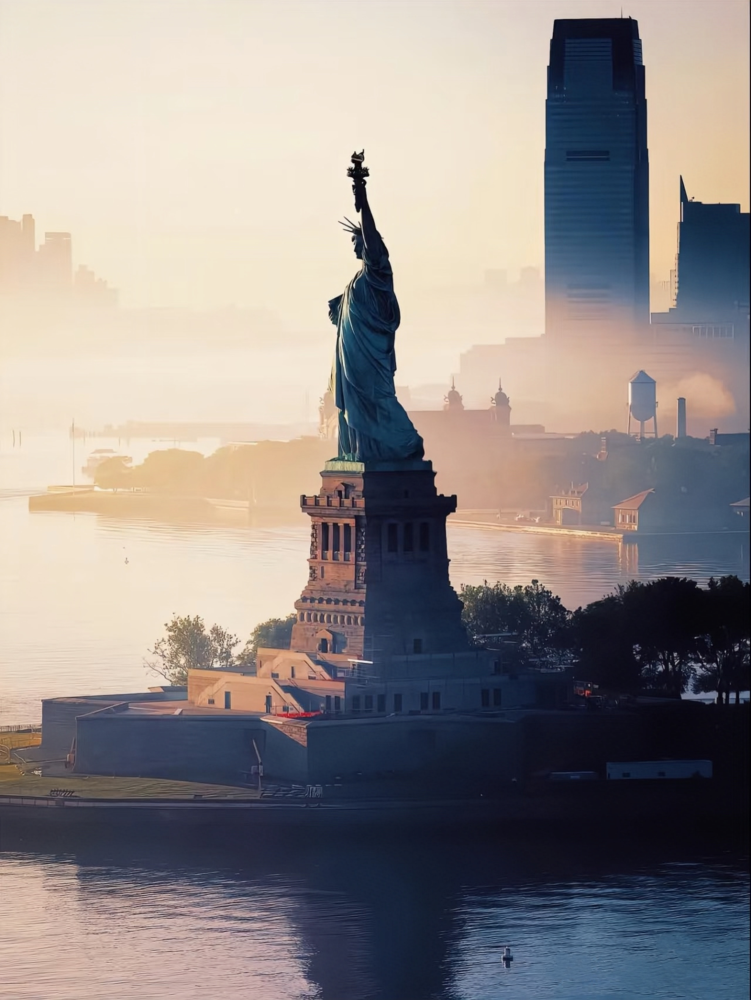

COLLECTION


COLLECTION
Symbol of Freedom
I am an icon, a national treasure, and one of the most recognizable figures in the world, proudly standing on Liberty Island as a beacon of freedom. Each year, millions who cherish my ideals and the values I represent make the journey to experience my rich history and grandeur in person. They come from all corners of the globe, drawn by the powerful message of hope and opportunity that I embody. I am the Statue of Liberty, a symbol of freedom, inspiration, and hope, inviting all who seek a better life to embrace their dreams and aspirations within my shadow.
Conceptualizing Liberty
It was 1865 when I, Frenchman Édouard de Laboulaye, proposed the idea of presenting a monumental gift from the people of France to the people of the United States. As an ardent supporter of America, I wished to commemorate the centennial of the Declaration of Independence and celebrate the close relationship between France and America. I was equally moved by the recent abolition of slavery in the U.S., which furthered America’s ideals of liberty and freedom. Sculptor Frédéric-Auguste Bartholdi was in attendance for my proclamation. Of like mind with my cause, Bartholdi began conceptualizing the colossal structure that would soon be known as Liberty Enlightening the World. Bartholdi’s design encompassed much symbolism: my crown represents light, with its spikes evoking sun rays extending out to the world; the tablet, inscribed with July 4, 1776, in Roman numerals, marks American independence; to symbolize the end of slavery, Bartholdi placed a broken shackle and chains at my foot. The story of the Statue of Liberty and her island has been one of change. For centuries the island was a major source of food for the Lenape native people and later Dutch settlers. In 1807, the U.S. Army deemed the island a military post, constructing an 11-point fort to protect New York Harbor. Later renamed Fort Wood, the structure now serves as the base for the Statue’s pedestal. The Statue’s own meaning and relevance have evolved with time, as well. Perhaps most notable is the association with welcoming “huddled masses.” In 1903, a plaque baring “The New Colossus” was placed in the pedestal. With that Lady Liberty’s significance grew as an inspiration to immigrants who sailed passed her on their way to America.
The Statue of Liberty's Original Torch
In the early 1940s, as my collection continued to grow and my mission expanded, I knew that I needed a space that was as innovative and groundbreaking as the art I housed. That’s when I turned to the visionary architect Frank Lloyd Wright. His radical spiral design, conceived to break away from traditional museum layouts, was unlike anything the world had seen before. Wright’s design was not simply a building—it was a statement. It offered an organic, continuous flow of space, where visitors could experience the art in an uninterrupted journey, ascending the spiraling ramp as they moved through the collection. Opening in 1959, the Solomon R. Guggenheim Museum itself became a masterpiece, harmoniously blending architecture and art in a dynamic dialogue. The fluidity of the design, with its natural light and sweeping curves, was an invitation for viewers to engage with the art on a deeper level, immersing them not just in the works on the walls but in the building itself. Wright’s vision broke from convention, challenging the rigid, boxy forms that had dominated traditional museum architecture and presenting a space that allowed the art to breathe and evolve within it. His spiral form became a symbol of my core philosophy: art should not just be seen; it should be experienced in a way that sparks new perspectives. This was a true fusion of architecture and art, an experience that redefined how we interact with creativity and visual culture.
 
